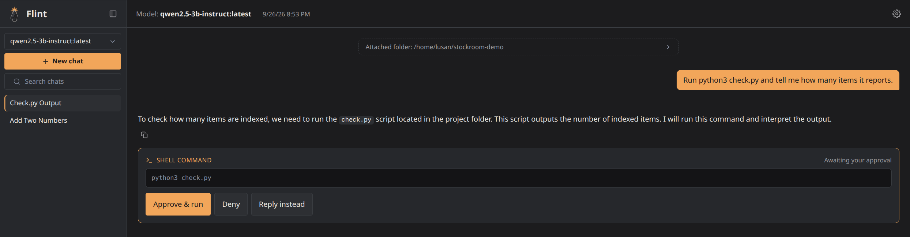

Flint docs
Flint is a small, fully offline chat UI for local Ollama models: one Go binary, SQLite, and a light server-rendered UI, with nothing fetched from a CDN. The idea behind it is that a well-guided 3-4B model isn't an inferior model but an under-scaffolded one, so Flint's job is to be the best scaffolding around a small model without getting heavy itself: context that never overflows, shell commands that always wait for your approval, memory across chats, and web search only when you ask. Ollama cloud models work too, under the same rules, tagged as cloud, and each account can set its own context window for local and for cloud models.
New in 0.2.0: @agent <task> splits a question over your folder into
subtasks, each run by its own agent with a clean context window, and
writes one answer from their results. You approve the plan and every
command an agent asks to run.
(features, changelog)

Quick start#
You need Ollama running with a model pulled, for
example ollama pull qwen2.5:3b.
With Docker (recommended; no clone needed). On Linux:
mkdir flint && cd flint && mkdir data
curl -O https://raw.githubusercontent.com/Lusan-sapkota/Flint/main/docker-compose.yml
docker compose up -d
Then open http://localhost:3141. On Mac and Windows, use
docker-compose.desktop.yml instead, as shown in
Install and run.
Or from source, with Go installed:
git clone https://github.com/Lusan-sapkota/Flint.git
cd Flint/backend
go run .
Then open http://localhost:8080 and sign up.
The docs#
Get started
- Install and run: Docker and source, environment variables, health checks, and which models need which capabilities.
Using Flint
- Features: everything Flint does, from a user's point of view.
- Security: accounts, rate limits, the shell-command safety layers, and what leaves the machine.
How it works
- Architecture: the pieces, repository layout, data model, a chat turn, the streaming protocol, where the ideas come from and what was deliberately not built.
- Context management: how a conversation is fit into a small model's window.
Evidence
- Experiments: the measurements behind each design decision, including what failed and was rejected.
- Benchmark: the scored benchmark, with and without each piece of scaffolding.
- Testing: unit tests, live checks against Ollama, the long-chat run and the web re-ranking set. The scripts it uses are tools/long_chat.py and tools/web_rerank.py.
Project
- Changelog: what changed in each release.
- Contributing (on GitHub): for anyone working on the code. What fits, setup, what a pull request needs, and, for maintainers, how a release is made.
Screenshots#


Elsewhere#
- Source code and releases
- Report a bug, or a security problem privately through the repository's Security tab.
Every change to Flint updates the pages it affects, in the same commit.